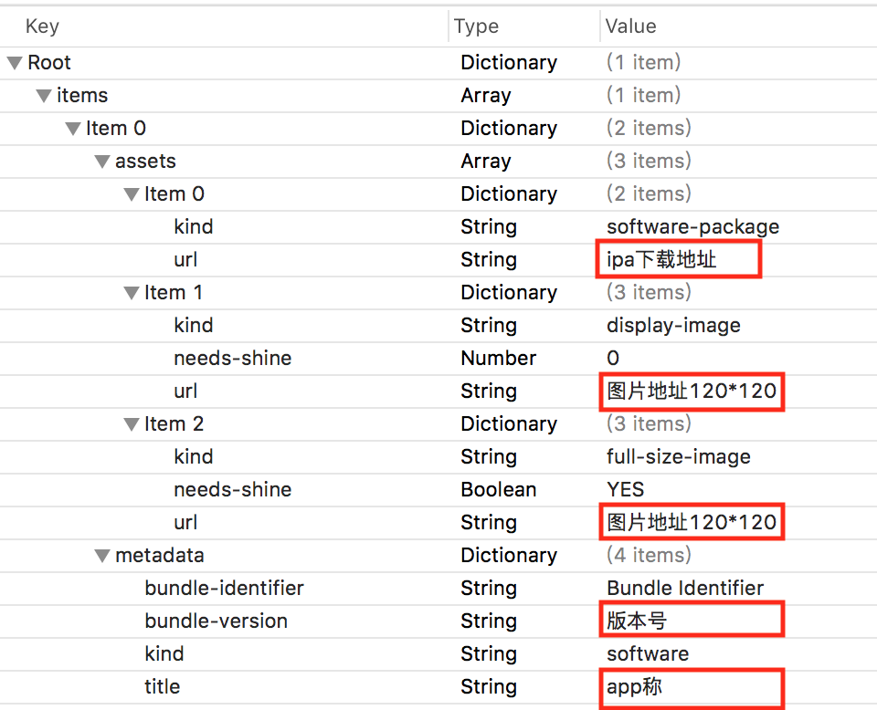

最近在项目中遇到了企业版app添加自动更新功能，来提醒用户来升级app，通过调用fir获取版本信息接口，来判断是否有更新版本
注意此处获取到的安装地址install_url只能使用一次
具体比较方法如下：
/// 判断是否为新版本
///
/// - Parameter newVersion: fir上获得的版本号
/// - Returns: 是否为新版本
fileprivate class func compareHasNewVersion(newVersion: String) -> Bool {
if let appVersion = MMHUserAgent.getApplicationVersion() {
let currentVersionArray = appVersion.components(separatedBy: ".")
let newVersionArray = newVersion.components(separatedBy: ".")
let count = min(currentVersionArray.count, newVersionArray.count)
for index in 0..<count {
let currentV = Int(currentVersionArray[index]) ?? 0
let newV = Int(newVersionArray[index]) ?? 0
if newV > currentV {
return true
}
}
}
return false
}plist代码示例：点击下载plist模板
安装app：
if let url = URL(string: String(format: "itms-services://?action=download-manifest&url=%@", "https://xxx.plist")) {
UIApplication.shared.openURL(url)
}